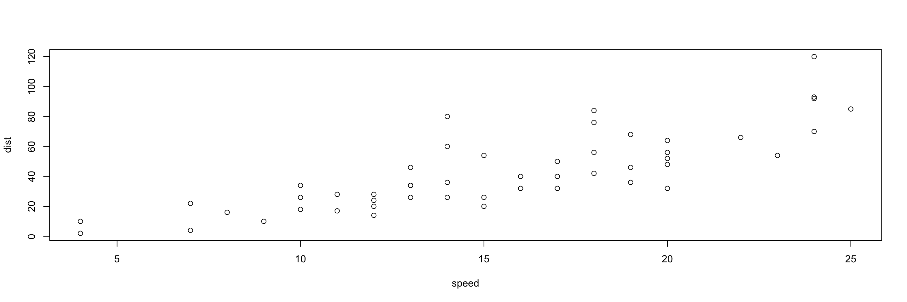

Webexercises template
This is a Web Exercise template created by the psychology teaching team at the University of Glasgow, based on ideas from Software Carpentry. This template shows how instructors can easily create interactive web documents that students can use in self-guided learning.
The {webexercises} package provides a number of functions that you use in inline R code or through code chunk options to create HTML widgets (text boxes, pull down menus, buttons that reveal hidden content). Examples are given below. Render this file to HTML to see how it works.
NOTE: To use the widgets in the compiled HTML file, you need to have a JavaScript-enabled browser.
Example Questions
Fill-In-The-Blanks (fitb())
Create fill-in-the-blank questions using fitb(), providing the answer as the first argument.
- 2 + 2 is
You can also create these questions dynamically, using variables from your R session.
- The square root of 49 is:
The blanks are case-sensitive; if you don’t care about case, use the argument ignore_case = TRUE.
- What is the letter after D?
If you want to ignore differences in whitespace use, use the argument ignore_ws = TRUE (which is the default) and include spaces in your answer anywhere they could be acceptable.
- How do you load the tidyverse package?
You can set more than one possible correct answer by setting the answers as a vector.
- Type a vowel:
You can use regular expressions to test answers against more complex rules.
- Type any 3 letters:
Multiple Choice (mcq())
- “Never gonna give you up, never gonna: ”
- “I down in Africa” -Toto
True or False (torf())
- True or False? You can permute values in a vector using
sample().
Longer MCQs (longmcq())
When your answers are very long, sometimes a drop-down select box gets formatted oddly. You can use longmcq() to deal with this. Since the answers are long, It’s probably best to set up the options inside an R chunk with echo=FALSE.
What is a p-value?
What is true about a 95% confidence interval of the mean?
Checked sections
Create sections with the class webex-check to add a button that hides feedback until it is pressed. Add the class webex-box to draw a box around the section (or use your own styles).
I am going to learn a lot:
What is a p-value?